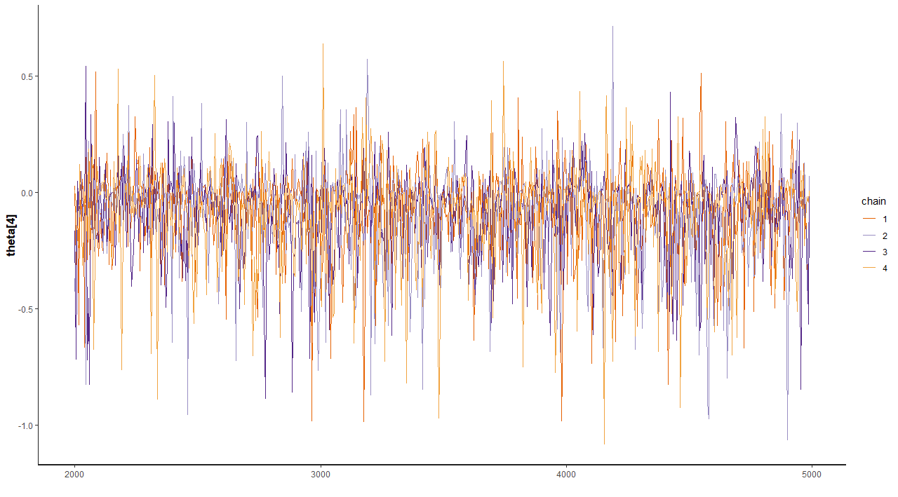
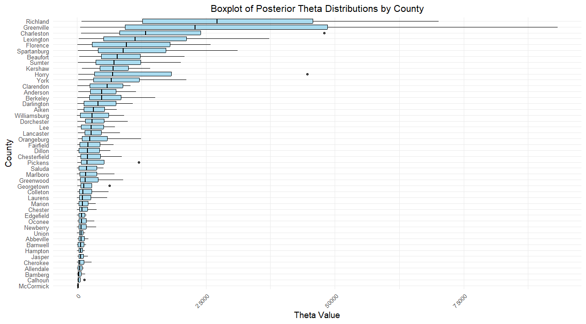
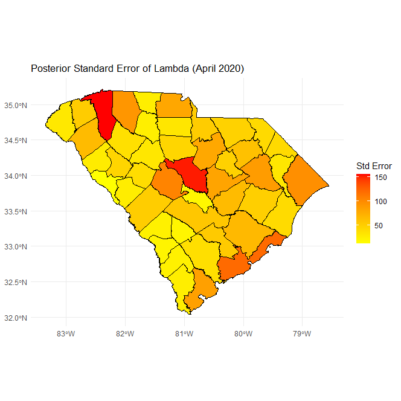

mapsboxplots
JMitic01
2025-01-12
Last updated: 2025-04-27
Checks: 2 0
Knit directory: myproject_scframework/
This reproducible R Markdown analysis was created with workflowr (version 1.7.1). The Checks tab describes the reproducibility checks that were applied when the results were created. The Past versions tab lists the development history.
Great! Since the R Markdown file has been committed to the Git repository, you know the exact version of the code that produced these results.
Great! You are using Git for version control. Tracking code development and connecting the code version to the results is critical for reproducibility.
The results in this page were generated with repository version 9dd8b0a. See the Past versions tab to see a history of the changes made to the R Markdown and HTML files.
Note that you need to be careful to ensure that all relevant files for
the analysis have been committed to Git prior to generating the results
(you can use wflow_publish or
wflow_git_commit). workflowr only checks the R Markdown
file, but you know if there are other scripts or data files that it
depends on. Below is the status of the Git repository when the results
were generated:
Ignored files:
Ignored: .Rproj.user/
Ignored: data/fit_allaugust.RData
Untracked files:
Untracked: analysis/test.Rmd
Untracked: analysis/theta_mapping.Rmd
Untracked: myproject_clean/
Untracked: stan_allcounties.RData
Untracked: stan_allcounties.Rmd
Untracked: stan_output.RData
Note that any generated files, e.g. HTML, png, CSS, etc., are not included in this status report because it is ok for generated content to have uncommitted changes.
These are the previous versions of the repository in which changes were
made to the R Markdown (analysis/mapsboxplots.Rmd) and HTML
(docs/mapsboxplots.html) files. If you’ve configured a
remote Git repository (see ?wflow_git_remote), click on the
hyperlinks in the table below to view the files as they were in that
past version.
| File | Version | Author | Date | Message |
|---|---|---|---|---|
| html | c3eb184 | JMitic01 | 2025-01-16 | Add all new images to the project |
| html | 983faa4 | JMitic01 | 2025-01-16 | Build site. |
| Rmd | 74443ed | JMitic01 | 2025-01-16 | wflow_publish("analysis/mapsboxplots.Rmd") |
| html | a8193c3 | JMitic01 | 2025-01-13 | Build site. |
| Rmd | d45f6a3 | JMitic01 | 2025-01-13 | Publish all untracked files, including analyses, R data files, and |
| html | 1fcfafd | JMitic01 | 2025-01-13 | Build site. |
| Rmd | 59306b8 | JMitic01 | 2025-01-13 | Publish all untracked files, including analyses, R data files, and |
Explanation of Trace Plots
Trace plots provide a visual assessment of how well the Markov Chain Monte Carlo (MCMC) sampling has converged and mixed for the parameters of interest. Each line in the trace plot represents a single MCMC chain, and the x-axis denotes the iteration number, while the y-axis shows the parameter’s sampled value.
- Beta, Sigma, and Rho Trace Plots:
The trace plots forbeta_0,sigma, andrhoshow the sampling behavior of these key parameters. Consistent patterns across chains suggest that the sampler has explored the posterior distribution effectively.
- Theta Trace Plots:
These plots visualize the sampling behavior of selected elements of thethetaparameter vector (e.g.,theta[1],theta[4], etc.). Well-mixed and stationary traces imply that the sampler is appropriately capturing the variability in these parameters.  ### Boxplot of Posterior Theta Distributions by County The plot below illustrates the posterior distributions of the parameter \(\theta\) for each county, derived from the fitted Bayesian model. \(\theta\) represents a county-specific characteristic, such as the likelihood of a certain event or an underlying risk factor. For this visualization:
- Each boxplot corresponds to a specific county, with counties arranged on the vertical axis.
- The horizontal axis represents the range of posterior \(\theta\) values for each county.
- The boxplots provide insights into the variability and central tendency of \(\theta\) across posterior samples. Wider distributions indicate greater uncertainty in the estimate for that county, while narrower distributions suggest more precise estimates.
This figure is useful for comparing the variability of \(\theta\) across counties and identifying counties with distinctly higher or lower values relative to others.  ## Posterior Mean of Lambda Across Counties for April 2020
The next figure presents a map of South Carolina, showing the spatial
distribution of the posterior mean of \(\lambda\) for April 2020.
\(\lambda\) reflects a county-level
parameter of interest, such as the average rate of an event or a model
prediction.
Counties are shaded according to the mean \(\lambda\), with a gradient from blue
(indicating lower values) to red (indicating higher values). Grey
shading denotes counties for which \(\lambda\) estimates are unavailable.
This map highlights geographical patterns in the parameter estimates.
For example, clusters of high or low \(\lambda\) values may suggest spatial
correlations or region-specific factors influencing the observed
outcomes.
 ###Cases Per Capita Across Counties The following map visualizes the
distribution of reported cases per capita across counties for a specific
time period. Cases per capita are calculated as the total number of
cases in a county divided by its population, providing a standardized
measure that accounts for differences in county population sizes.
###Cases Per Capita Across Counties The following map visualizes the
distribution of reported cases per capita across counties for a specific
time period. Cases per capita are calculated as the total number of
cases in a county divided by its population, providing a standardized
measure that accounts for differences in county population sizes.
Counties are shaded on a gradient scale, with lighter shades representing lower cases per capita and darker shades indicating higher values. This approach highlights regions with disproportionately high or low case rates relative to their population size.
This map helps identify hotspots of disease activity and regions with
higher per capita risk. Such insights are valuable for resource
allocation, public health interventions, and understanding local
dynamics that may contribute to disease spread.  ###Standard Error of Lambda Across Counties
for April 2020 The final map visualizes the uncertainty associated with
the estimates for April 2020, as measured by the posterior standard
error.
###Standard Error of Lambda Across Counties
for April 2020 The final map visualizes the uncertainty associated with
the estimates for April 2020, as measured by the posterior standard
error.
Counties are shaded using a gradient from yellow (indicating lower uncertainty) to red (indicating higher uncertainty), with grey for counties with unavailable data. This visualization helps identify regions where the model’s predictions are less reliable, which could inform decisions about future data collection or model refinement. 